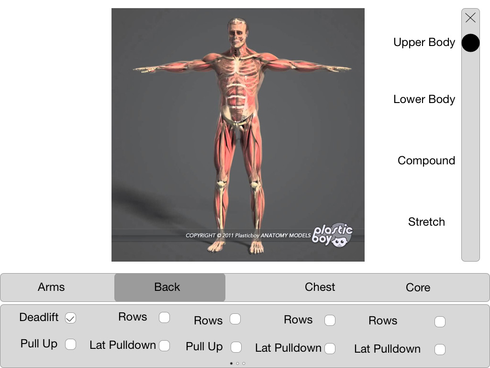
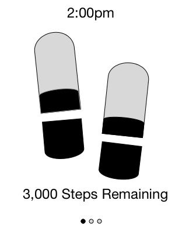
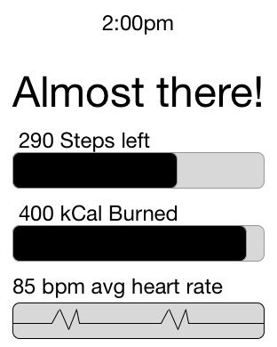
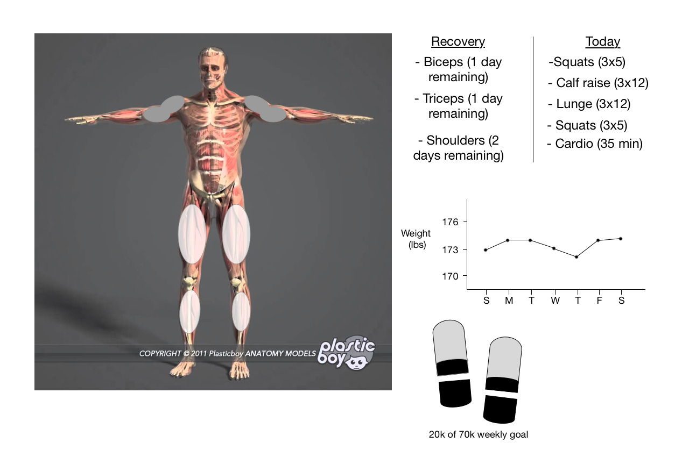

Persona: Brad is a college student who enjoys going to the gym because of the way it makes him feel, physically and mentally. He lacks the ability to go consistently, so he is looking for a way to be constantly reminded of his health throughout the day. He also gets bored with the same routine over and over, and looks for new ways to discover different workouts. Finally, he wishes he had the ability to track his progress as it is a good indicator of his overall health and drives him to constantly improve.
Video:
PDF:



